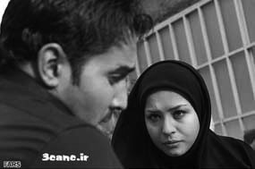

پذيرش > سایت نوشته ها > زنان سریالهای ماه رمضان در جستوجوی شوهر
 به روایت زنان به روایت زنان

 زنان سریالهای ماه رمضان در جستوجوی شوهر زنان سریالهای ماه رمضان در جستوجوی شوهر
14 مهر 1387 - رادیو زمانه / لوا زند - نسخه قابل چاپ
چند سالیست که در ماه رمضان سریالهای تلوزیونی پای ثابت سفره افطار ایرانیان هستند. امسال هم در این ماه، چهار سریال از چهار شبكه صدا و سیمای جمهوری اسلامی ایران پخش شد.
سریالهای «بزنگاه» به كارگردانی رضا عطاران از شبكه سوم، «مثل هیچ كس» به كارگردانی عبدالحسین برزیده از شبكه دوم، «روز حسرت» به كارگردانی سیروس مقدم از شبكه اول، و سریال «مامور بدرقه» به كارگردانی سعید سلطانی از شبكه پنجم، به ترتیب بعد از افطار پخش میشدند.
مریم مهتدی، خبرنگار هنری مهمان برنامه امروز روایت زنان است که درمورد این سریالها و تصویری که از زنان در آنها به نمایش گذاشته شده صحبت میکند.
در ماه رمضان امسال چهار سریال از شبکههای مختلف تلوزیونی پخش شد. یکی از این سریالها، «بزنگاه» به کارگردانی رضا عطاران بود.
ماجرای سریال از این قرار بود که پدر خانوادهای که صاحب یک نانوایی است، میمیرد و این سریال طنز درمورد اختلاف بین برادرها درمورد ارث و میراث است و اینکه هرکس میخواهد چیزی از ارثیه را صاحب شود.
اگر بخواهیم از منظر زنان به سریال نگاه کنیم، زنان این سریال نیز، مثل اکثر سریالهایی که تا به حال از تلوزیون ما پخش شده، یکسری زن خانهدارند که در خانههایشان نشستهاند و اتفاقات اصلی داستان درمورد آنها نیست. آن ها بیشتر نقشهای حاشیهایی دارند.
در سریال «بزنگاه» دختری به نام فریده داریم که دختری با ظاهری - به قول عموم- زشت و یک مقداری از نظر برخوردهای اجتماعی خنگ است.
برای زنان بهعنوان یک شخصیت تازه در تلویزیون نبود اما بار اولی بود که چنین قیافهای از یک دختر درست کرده بودند. این زشتی آنقدر به چشم میآمد که قرار بود در اینترنت عکسهای بدون گریمش پخش شود تا معلوم شود این دختر واقعاً چقدر زشت است.
نکتهای که میشود درمورد این شخصیت گفت، همین نقش عقبافتادگی بود و اینکه همه میخواستند به زور شوهرش بدهند و همه به دنبال شوهری برای او میگشتند. دغدغهی اصلی درمورد این دختر، شوهر کردنش بود. فکر میکنم زنها واقعاً در سریال «بزنگاه» هیچ جای خاصی نداشتند.
سریال بعدی «مثل هیچکس»، یک سریال کاملاً سنتی بود. فضایی قدیمی، خانوادهای قدیمی، ساختمانهای قدیمی، و روابط فامیلی که در گذشته وجود داشتند و الان کمرنگ شدهاند.
این سریال خیلی مخاطب جلب کرد. زنان این سریال هم زنان کاملاً سنتی قدیمی ایرانی بودند. یعنی مادری که محور روابط خانوادگی بود و بهاصطلاح چراغ خانه بود که با مرگش در پایان سریال، یک پایه از خانه کم شد.
ماجرای سریال «مثل هیچکس» این بود که برادر بزرگی در آن خانواده به اسم «داداشی» بود که با فوت پدر، مسوولیت آن خانه و آدمها و ارث و میراث به گردن او میافتد. زنان این سریال کاملاً سنتی بودند. یکی از شخصیتها زنی به نام اشرفالسادات بود که غیر از گریه چیزی از او در این سریال ندیدیم.
در قسمتهای پایانی، زنی که شوهرش را دوست دارد اما با هم اختلاف دارند و طلاق در آن خانواده مرسوم نیست خیلی نادم و پشیمان برگشته و مدام گریه میکند و میگوید که هیچ گناهی در طلاق نداشته و بیتقصیر بوده است.
فکر میکنم خوبی سریال این بود که بالاخره یک مقدار از آن حالت که "زنها هیچ نمیدانند" در آمده بود. زنها حداقل یک مقدار نقش محوریتری داشتند. مثلاً «بیبی» در این سریال، شخصیتی بود که همه میآمدند و با او مشورت میکردند.
در واقع بهعنوان یک زن به او توجه میشد و نظرش خیلی مهم بود و حرفش، حرف بود و اینطور نبود که خیلی مردسالاری در این سریال به چشم بیاید.
«مامور بدرقه» یک سریال طنز دیگر بود که سریال کم مخاطبی هم به نظر میرسید. داستان یک پلیس بازنشسته بود که در زمان بازنشستگی به او ماموریت میدهند که یک متهم به نام افشین را بدرقه کند.
این شخص وارد خانه این مامور میشود و اعتماد زن و بچهاش را جلب میکند و یکسری اتفاقات طنز هم حول این ماجرا بهوجود میآید.
دو زن در این سریال حضور داشتند، یکی مهرانه مهینترابی که زن آن مامور است و دیگری بهاره رهنما که دخترش است.
بحثی که ـ حداقل بین همکاران روزنامهنگار من ـ زیاد درگرفت، نقش بهاره رهنما به عنوان یک دختر لوس خانواده بود که به شدت دوست دارد شوهر کند.
به هر طریقی در دیالوگها و موقعیتهای طنز، این آدم به دنبال شوهر میگردد. این تصویر مرا بهعنوان یک مخاطب یک مقدار اذیت کرد.
فکر میکنم در سریالهای طنز دیگر کافی باشد، که دختری مدام به دنبال شوهر بگردد و هیچ دغدغه دیگری در زندگی غیر از شوهر کردن نداشته باشد. حتی اگر کار این دختر درس دادن زبان انگلیسی به بچهها باشد، آن کار به چشم نمیآید.
نقش مهرانه مهینترابی هم یک زن کاملاً منفعل است. از یک طرف به بچهاش میگوید اینقدر شوهر شوهر نکن و از طرف دیگر به شوهرش چیز دیگری میگوید و هیچ فضای مستقلی برای خودش نداشته است
در سریال «روز حسرت» که از شبکه یک پخش میشد، حضور زنها خیلی جدیتر بود، یک زن شاغل ـ افسانه بایگان ـ توی این سریال است. و یکسری زن دیگر که البته بیشتر اتفاقات را آنها دارند درست میکنند.
«روز حسرت» ماجرای یک خانوادهای است که در آخرهای سریال مشخص میشود که پسری را به فرزند خواندگی قبول کردهاند.
این پسر ازدواج میکند و با زنش درگیر یک تصادف و زنش فلج میشود. پسر بعد از مدتی، پنهانی زن دوم میگیرد.
بعد از یک مدت، زن دوم به زن اول که زمینگیر است میگوید که زن دوم شوهرش است و زن اول هم همان شب دق میکند و میمیرد.
اگر بخواهیم از نظر نقش زنها بررسی کنیم، شخصیت مادر خانواده است ـ افسانه بایگان ـ که وکیل و تحصیل کرده است. دفتر کار دارد و گاهی درمورد پروندههایاش و مسایل کاری صحبت میکند.
زن دیگر، زن دوم ماجرا است که بهعنوان هوو در سریال نشاناش دادهاند. فریده زنی بیکس و کار و معتاد است و اول اینجور نشان داده میشود که زندگی کسی را خراب کرده است.
منتها این تصویر همینطور ـ با پخش قسمتهای بیشتر سریال ـ عوض شده است. الان سریال به مرحلهای رسیده است که مردم بیشتر دلشان به حال این دختر میسوزد تا کس دیگر.
یک زن دیگر هم داریم، تا جایی که حداقل حافظه من یاری میکند، اولین باری است که در سریالهای ایرانی، ساقی یا کسی که مواد را به اینها میرساند یک زن است، زنی که وضع مالی خوبی دارد و پخشکننده مواد است.
یک زن دیگر هم بهنام معصومه هست. زن اول که تصادف کرده و بعد هم در میانه سریال میمیرد. هیچ نقشی به غیر از یک آدم مریض روی تخت خوابیده و خیلی مهربان و با شعور نداشته است.
زنی که حداقل مرا خیلی اذیت کرد، منشی خانم وکیل است که یک زن لوس است که مدام در حال فضولی در کار این و آن است و سعی دارد از کار همه، از مراجعین دفتر گرفته تا روابط خانم وکیل با شوهرش سر در آورد.
اینجا ما دو موضوع داریم. یکی زنیست که شاغل و تحصیل کرده است و در سریال نشان داده میشود. کارگردان خیلی سعی کرده یک زن امروزی را با یک زن سنتی قاطی کند که فکر نمیکنم موفق شده باشد.
زنی است که بیرون از خانه کار میکند و تحصیل کرده است و از نظر مالی مستقل است، حتی به شوهرش از لحاظ مالی کمک میکند. این زن در داخل خانه یک شخصیت کاملاً عجیب و غریب دارد. مدام حاجآقا حاجآقا میکند و هیچکس بهجز او حق ندارد برای حاجآقا چایی بریزد. کاملاً یک زن مطیع است که به تمام حرفهای شوهرش گوش میدهد.
نقش فریده، نقش زنیست که الان حامله است و خیلی مظلوم واقع شده است. منتها تکلیف بیننده مشخص نیست که باید این زن را دوست داشته باشد یا نه. زنی است که در محیط کار با شوهرش آشنا شده و بیکس است. اول اینطور نشان داده میشود که آمده زندگی اینها را بهم بریزد. خودش از پسر خواستگاری میکند و الان این پسر است که سرش بلا میآورد
رادیو زمانه
ارسال به
بالاترین
،
توییتر
،
فریندفید
،
فیسبوک
در همين بخش :
 یک خبر تلخ؟ یک قانونشکنی؟ یک تصمیم بخشنامهای جدید؟ یک خبر تلخ؟ یک قانونشکنی؟ یک تصمیم بخشنامهای جدید؟
چرا بایست به سکسوالیته پرداخت؟ / نفیسه آزاد
آزارجنسی خانگی؛ «قربانی» نه، «نجات یافته»
زنان، بزرگترین بازندگان بهار عرب
سانسور از دیدگاه جنسیتی/الهه امانی
ديگر بخش ها :
طرح یک میلیون امضا
|
مقالات
|
سایت نوشته ها
|
اخبار
|
گزارش كمپين
|
گفت و گو
|
علیه سکوت
|
كوچه به كوچه
|
نامه های شما
|
گزارش ویژه
|
گفتگو با اعضا
|
ویژه سالگرد کمپین
|
تصویر برابری
|
دل آرام علی
|
تریبون
|
مقالات
|
تاریخ شفاهی
|
خارج از چارچوب
|
کتابخانه
|
درباره کمپین
|
کمپین در شهرها
|
کمپین در بند
|
صدای تغییر
|
ویژه 22 خرداد
|
لایحه حمایت از خانواده
|
گالری
|
عشا مومنی
|
امیر یعقوبعلی
|
خدیجه مقدم
|
راحله عسگری زاده و نسیم خسروی
|
پروین اردلان،جلوه جواهری، مریم حسین خواه، ناهید کشاورز
|
زینب پیغمبرزاده
|
سعیده امین، سارا ایمانیان، محبوبه حسین زاده، ناهید کشاورز و همایون نامی
|
احترام شادفر
|
نسیم سرابندی زاده،فاطمه دهدشتی
|
وبلاگ مهمان
|
پرونده خرم آباد
|
دستگیری ها
|
مریم مالک
|
پرستو اللهیاری
|
مهرنوش اعتمادی
|
سمیه رشیدی
|
Other Languages
|
همراهان
|
«فراخوان کمپین ده روز با بهاره هدایت»
| English
|